Access Requests
The Access Request feature in Actian Data Intelligence Platform is designed to simplify and streamline the process of requesting access to data assets and products within the organization. It allows users to request access to the data assets or data products they need directly through Zeenea Explorer. Data owners can review these requests in Zeenea Studio and trigger an external workflow to apply the appropriate permissions and grant access to the data.
Key Benefits
The following are the key benefits of the Access Request feature:
- Frictionless access: End-users can easily request access to any dataset within the catalog without navigating complex processes across multiple tools.
- Approval workflow: Requests are automatically routed to the appropriate data owner or administrator for review and approval in Zeenea Studio, ensuring security and compliance are upheld.
- Audit trail: Every request and access change is tracked, providing full visibility and traceability of data access across the organization.
- Empowered teams: Enabling self-service access requests allows users to unlock data faster and maintain momentum without unnecessary delays.
This feature fosters a more collaborative and data-driven culture while upholding strong governance and security controls.
Principles
The following scheme describes how access requests are handled in Zeenea:
- A data consumer writes an access request from the details page of an item in Zeenea Explorer.
- Once the request is submitted, an email notification is automatically sent to the owner of the item for review.
- The data owner reviews the request in Zeenea Studio and either approves or rejects it.
- After the review, an email notification is automatically sent to the requester with the status of their request.
- If the request is approved, a machine-readable email or an API request is sent to the external ticketing tool or workflow system to create a ticket or directly configure the necessary permissions.
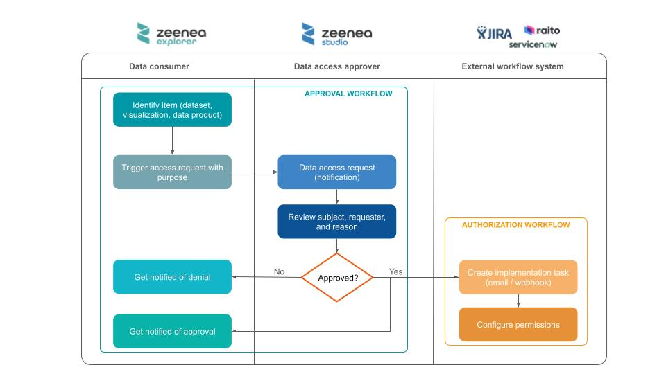
Access Request Policy
Access requests in Zeenea are managed through policies defined by administrators in the Zeenea Administration interface. These policies specify rules for requesting access to data assets, including required attributes. Data owners can define and manage access request policies in the Policies section. After a policy is created, it can be associated with individual data assets. Only items linked to a policy support access requests. Data consumers can request access to a data asset only if an access request policy is associated with it.
Create an Access Request Policy
You can create new access request policies in Zeenea Administration.
To create an access request policy
- Open Zeenea Administration.
- Go to the Policies section.
- Click the Create policy button.
The Create an Access Request Policy window opens.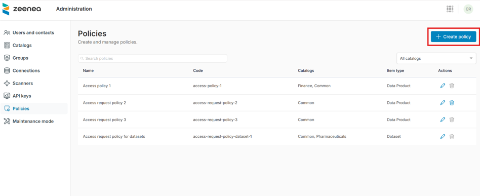
- Complete the following fields:
- In the General information section:
- Name (required): Enter a unique name for the access request policy.
- Code (required): Enter a unique identifier.
- Description: Provide a brief explanation of the policy.
- Catalogs to which the policy applies (required): Select the catalogs from the drop-down list. You can select multiple catalogs.
- Automatically apply on new catalogs: Toggle to automatically apply the policy to new catalogs.
- Item type to which policy applies (required): Select the item types for which you want to enable the policy:
- Datasets
- Visualizations
- Data products
- All custom item types
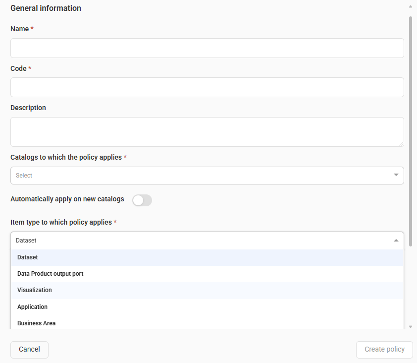
- In the Approval workflow section:
- Format of the request reason (required): Select one of the following formats:
- Free text: Type the reason for the request manually.
- Select a use case: Choose from a predefined list of use cases.
Note: A Use case is a built-in item type. By documenting use cases in the catalog, curators can provide more context for data owners when reviewing access requests and automate the setup of user permissions.
- Extra field from use case template: The field appears when you select Select a use case. Select a property from the available Multi-select or Tag type properties in the Use case item type template. For more information, see Extra Field from Use Case Template.
- Approvers (required): Select the roles responsible for approving access requests.
- Enable email notifications for requesters and approvers: Use the toggle to manage email notifications.
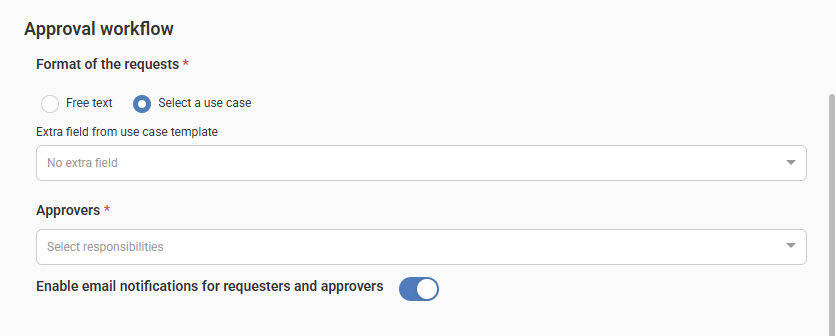
- Format of the request reason (required): Select one of the following formats:
- In the Mailhook and webhook section:
- Hook type: Select one of the following types from the drop-down list:
- No external workflow: No external actions (such as sending an email or calling a webhook) are triggered when an access request is approved. In this case, you must manually grant the required permissions in the source system.
- Email: For more information about configuration, see Configure the Email Channel for the Authorization Workflow.
- Webhook: For more information about configuration, see Configure the Webhook Channel for the Authorization Workflow.
- Select statuses: When you activate a mailhook or webhook, select the events you want to receive:
- Pending
- Rejected
- Approved
Note: The payload format is the same for all messages.
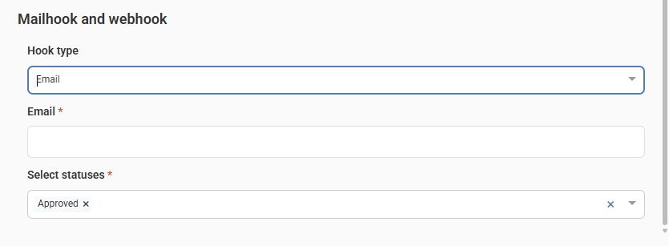
- Hook type: Select one of the following types from the drop-down list:
- Click Create policy.
A new access request policy is created.
Edit an Access Request Policy
You can edit the access request policies in Zeenea Administration.
To edit an access request policy
- Open Zeenea Administration.
- Go to the Policies section.
- Click the Edit the Access Request policy button in the Actions column.
An Update an Access Request Policy window opens. - Make the required changes to the policy attributes.
- Click Update policy.
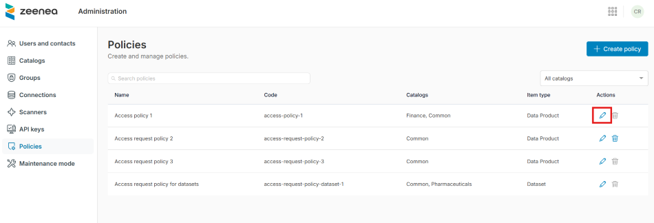
Delete an Access Request Policy
You can delete an access request policy only if it is not linked to any items.
To delete an access request policy
- Open Zeenea Administration.
- Go to the Policies section.
- Click the Delete policy button in the Actions column.
A Delete policy dialog opens. - Click Confirm.
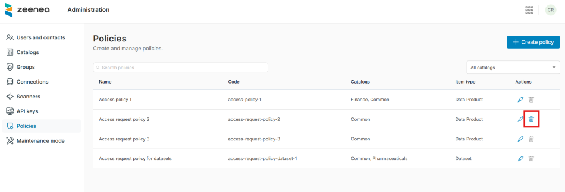
Extra Field from Use Case Template
When you select the Select a use case format, the Extra field from use case template field appears. This field allows you to select a property from the available Multi-select or Tag type properties in the Use case item type template (as defined in the Catalog design section). When a property is selected, the access request form updates so requesters can use this parameter to refine their request.
For example, you can use this option to manage access requests for user groups instead of individual users: 1. Assign user groups to each use case using a multi-select property. 2. When requesting access, the end user can select the user group for which they are requesting access. 3. This information is displayed to the data owner for review and then forwarded to the source system or IT department through the configured mailhook or webhook.
Configure the Email Channel for the Authorization Workflow (Mailhook)
When you activate the External workflow type and select Email, you must provide the following field:
- Email: Enter the email address that receives automatic notifications after each access request is approved in Zeenea Studio.
The email is formatted in XML so ticketing or workflow management tools, such as Jira or ServiceNow, can automatically parse it.
Authorization request email example with extra input field activated:
Object: [Zeenea] Data Access Request on Item ABCD
Content:
<?xml version="1.0" encoding="UTF-8"?>
<dataAccessRequest>
<requester>johndoe@acme.com</requester>
<approver>janesmith@acme.com</approver>
<accessRequestKey>123</accessRequestKey>
<policyCode>access-policy-1</policyCode>
<status>Approved</status>
<timestamp>2025-11-04T09:51:44.215886Z</timestamp>
<subject>
<technicalName>customer-profile</technicalName>
<url>https://acme.zeenea.app/studio/permalink?uuid=0fc7e9a4-034a-4845-898f-fa8cd48fd172&nature=data-product-output-port</url>
<key>API/customer/customer-profile</key>
<summary>Customer profile information.</summary>
<responsibilities>
<responsibility>
<label>Curator</label>
<code>curator</code>
<userEmail>janesmith@acme.com</userEmail>
</responsibility>
</responsibilities>
<properties>
<property>
<label>Personally Identifiable Information</label>
<code>$z_personally-identifiable-information</code>
<values><value>No</value></values>
</property>
</properties>
</subject>
<audience></audience>
<purpose><![CDATA[Analyse customer behavior.]]></purpose>
<useCase>
<name>Churn Risk Analysis</name>
<key>use-case/Churn Risk Analysis</key>
<summary>The analytics team wants to model customer churn risk by combining behavioral signals like last purchase date and declining engagement trends across channels.</summary>
<responsibilities>
<responsibility>
<name>Curator</name>
<code>curator</code>
<userEmail>haroldjames@acme.com</userEmail>
</responsibility>
</responsibilities>
<properties>
<property>
<label>Contributors</label>
<code>contributors</code>
<values>
<value>Group A</value>
<value>Group B</value>
</values>
</property>
</properties>
</useCase>
<extraInformation>
<name>Contributors</label>
<code>contributors</code>
<values>
<value>Group A</value>
</values>
</extraInformation>
</dataAccessRequest>
You can configure your workflow management tool to parse this email, extract the relevant information, and create a ticket to assign the correct permissions to the user.
Configure the Webhook Channel for the Authorization Workflow
When you activate the External workflow type and select Webhook, you must provide the following fields:
- Webhook URL: Enter the endpoint URL that your system exposes to receive access request notifications.
- Secret key: Enter a string of up to 4096 characters to sign the messages sent to the webhook.
To manage access request notifications, your system must expose an HTTPS REST API endpoint. After each access request approval, the Zeenea Platform sends POST messages secured with HMAC (Hash-based Message Authentication Code) to notify the webhook.
HMAC works as follows:
- For webhook requests, the provider signs the message using the secret key and the HMAC-SHA256 hashing algorithm, encodes the resulting signature in hex, and then includes it in the request header.
- The webhook listener receives the request and repeats the steps: signs and encodes the message using the secret key, then compares the resulting signature with the value sent in the request header. If they match, the request is legitimate.
The Zeenea Platform also provides a timestamp (X-TIMESTAMP parameter) in the request header to prevent malicious users from replaying the message.
The request signature is provided in the X-HUB-SIGNATURE-256 header, which is generated by encoding secret+timestamp+payload in that order.
Important
The platform makes a single call to the webhook and does not retry if the request returns an error or the endpoint is unavailable.
Request payload example with extra input field activated:
{
"webhookVersion": "1.0",
"requesterEmail": "johndoe@acme.com",
"timestamp": "2025-11-04T09:51:44.215886Z",
"policyCode": "access-policy-1",
"status": "Approved",
"approverEmail": "janesmith@acme.com",
"reasonFreeText": "Analyse customer behavior.",
"reasonUseCase": {
"name": "Churn Risk Analysis",
"key": "use-case/Churn Risk Analysis",
"summary": "The analytics team wants to model customer churn risk by combining behavioral signals like last purchase date and declining engagement trends across channels.",
"properties": [
{
"code": "contributors",
"label": "Contributors",
"value": [
"Group A",
"Group B"
]
}
],
"responsibilities": [
{
"roleName": "Curator",
"roleCode": "curator",
"userEmail": "haroldjames@acme.com"
}
]
},
"reasonUseCaseExtraInformation": {
"propertyName": "Contributors",
"propertyCode": "contributors",
"propertyValues": [
"Group A"
]
},
"itemInfo": {
"technicalName": "customer-profile",
"key": "API/customer/customer-profile",
"name": "Customer Profile",
"url": "https://acme.zeenea.app/studio/permalink?uuid=0fc7e9a4-034a-4845-898f-fa8cd48fd172&nature=data-product-output-port",
"summary": "Customer profile information.",
"properties": [
{
"code": "$z_personally-identifiable-information",
"label": "Personally Identifiable Information",
"value": [No]
}
]
},
"accessRequestKey": "123"
}
The following is a sample of Node.js code to check the messages:
const signatureHeader = 'X-HUB-SIGNATURE-256'
const signatureAlgorithm = 'sha256'
const encodeFormat = 'hex'
const hmacSecret = 'secret'
const timestampHeader = 'X-TIMESTAMP'
app.post('/webhook', (req, res) => {
// Get hash sent by the provider
const providerSig = Buffer.from(req.get(signatureHeader) || '', 'utf-8')
// Create digest with payload + hmac secret
const hashPayload = req.rawBody
const timestamp = req.get(timestampHeader)
const hmac = crypto.createHmac(signatureAlgorithm, hmacSecret)
const hmacWithTimestampAndHashPayload = hmac.update(timestamp.toString(), 'utf-8').update(hashPayload, 'utf-8');
const digest = Buffer.from(hmacWithTimestampAndHashPayload.digest(encodeFormat), 'utf-8')
// Compare digest signature with signature sent by provider
if (providerSig.length !== digest.length || !crypto.timingSafeEqual(digest, providerSig)) {
res.status(401).send('Unauthorized')
}else{
// Webhook Authenticated
// process and respond...
res.json({ message: "Success" })
}
})
Activate Access Request on an Item
When access request policies are enabled for an item type, curators can activate the feature from an item details page. You must have write permissions on the item to activate access request.
To activate access request
- In Zeenea Studio, open the item details page.
- In the General tab, select the required policy from the ACCESS REQUEST POLICY drop-down list.
A Set an access request policy dialog opens. - Click Confirm.
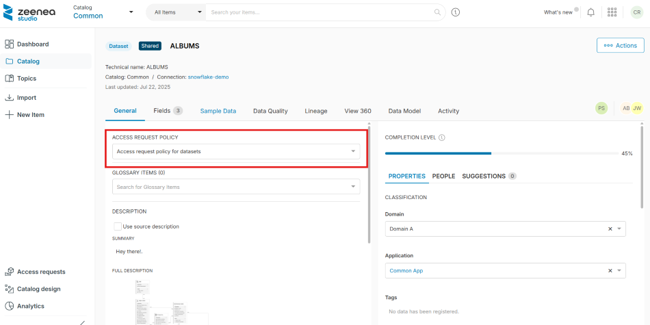
Deactivate Access Request
Make sure there are no pending access requests for the item before deactivating the policy. Once the policy is deactivated, pending access requests remain, but the authorization workflow (such as email notifications or webhook calls) will not be triggered.
To deactivate access request
- In Zeenea Studio, open the item details page.
- In the General tab, select No access request policy from the ACCESS REQUEST POLICY drop-down list.
A Remove the access request policy dialog opens. - Click Confirm.
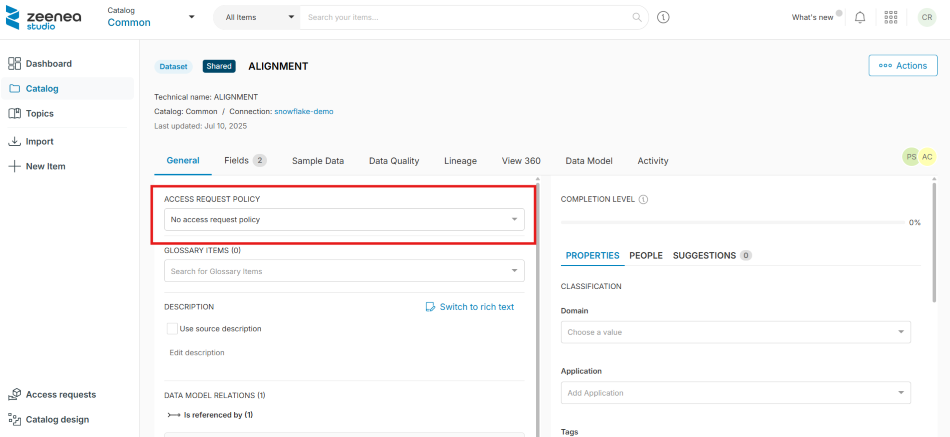
Note that at least one contact assigned to the item must have access to the Studio to make the feature available in the Explorer. This ensures at least one person can review the access requests for this item.
Submit Access Request on an Item
When the feature is activated for an item, you can request access from the item details page in Zeenea Explorer.
To submit an access request
- In Zeenea Explorer, go to the item details page.
- Click the Request Access button on the top right.
A Create a new access request dialog opens. - Provide the following information:
- If the Use case field is displayed:
- Use Case (required): Select the use case from the drop-down list.
- If an extra input field is configured (for example, User group) (required): Select the necessary values from the multi-select list.
- Reason (optional): Enter the reason or project for which you need access to the data.
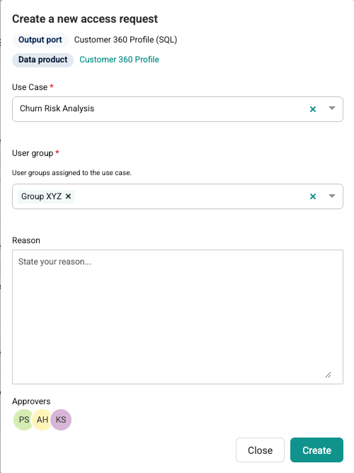
- If the Use case field is not displayed:
- Reason (required): Enter the reason or project for which you need access to the data.
- Audience (required): Select for whom you are requesting access (Myself or Service account).
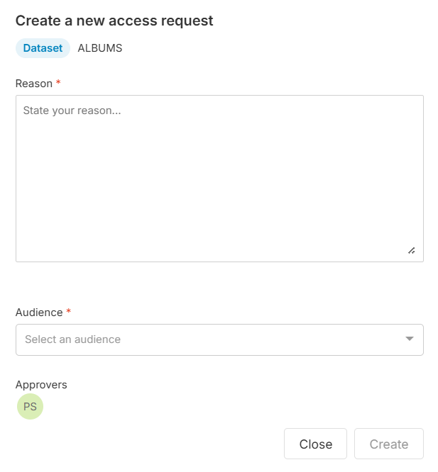
- Click Create.
Once the request is submitted, the approver receives an email notification to invite them to review it. After the review, you will receive an email notification with the status of your request (approved or rejected) and an optional comment from the approver.
Manage Pending Access Requests
List Pending Data Access Requests
You can retrieve the list of your pending data access requests in Zeenea Explorer.
To view the list of pending data access requests
- Open Zeenea Explorer.
- Click the Access requests button in the upper-right corner of the Zeenea Explorer header.
The Access requests window opens, displaying the list of pending access requests.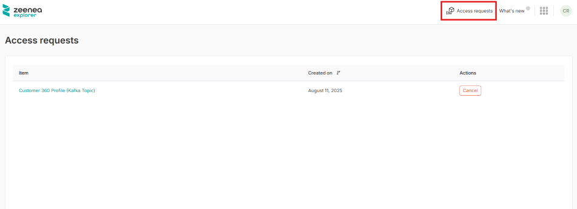
Cancel Data Access Request
You can cancel your pending data access request in Zeenea Explorer.
To cancel the data access request
- Open Zeenea Explorer.
- Click the Access requests button in the upper-right corner of the Zeenea Explorer header.
- Click the Cancel button in the Actions column.
A Cancel the access request dialog opens. - Click Confirm.
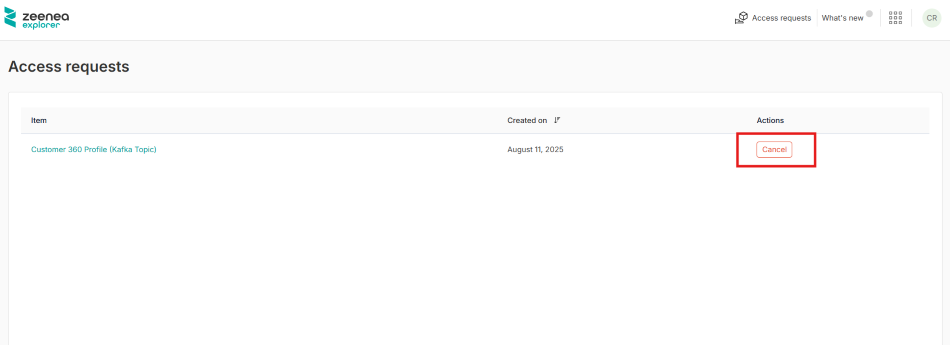
When cancelled, the request is removed from the list of pending requests for the approver.
View the Status of an Access Request
You can view the current status of an access request in both Studio and Explorer. The possible statuses are: - Pending: The request is awaiting review by the data owner. - Approved: The request has been approved, but the access has not yet been granted. - Rejected: The request has been rejected by the data owner. - Granted: Access has been granted in the source system. - Error: An error occurred during the process of granting access. - Closed: The request has been cancelled by the requester.
View the Status in Studio
In Studio, the data owner can view the current status and all status change activities of an access request.
To View the status details
1. Open Zeenea Studio.
2. Go to the Access requests section.
The Access requests window opens, displaying the list of access requests.
3. Click an access request from the list.
The Access Request Details side panel opens, displaying the request's current Status and Activity history, including any comments.
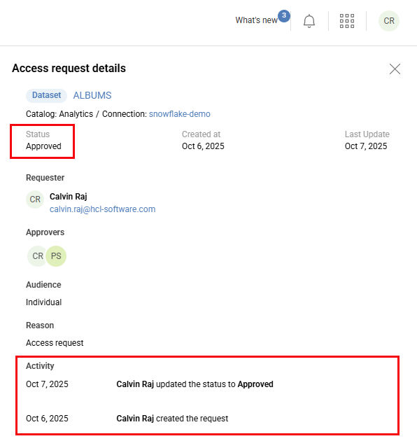
View the Status in Explorer
In Explorer, the data requester can view the current status and all status change activities of an access request.
To View the status details
1. Open Zeenea Explorer.
2. Click the Access requests button in the upper-right corner of the Explorer header.
3. Click an access request from the list.
The Access Request Details side panel opens, displaying the request's current Status and Activity history, including any comments.
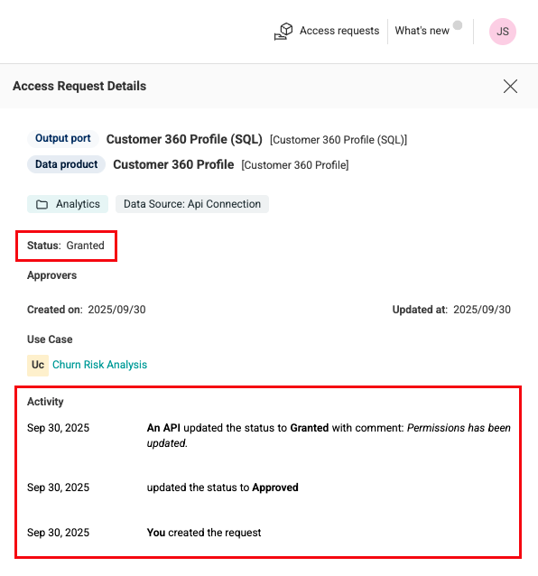
Review Access Requests
You can manage the access requests assigned to you from the Access requests section in the Studio.
To review the access requests
- Open Zeenea Studio.
- Go to the Access requests section.
An Access requests window opens, displaying the list if pending access requests assigned to you. - Click an access request to open a side panel with more details.
- After reviewing the details, click Approve or Reject button from the Actions column.
An Approve the access request or Reject the access request dialog opens.Note: In both cases, you can add a comment.
- Click Confirm.
- If the External workflow type option is activated in Administration, Zeenea Studio automatically sends an email to the specified email or calls the webhook when a request is approved.
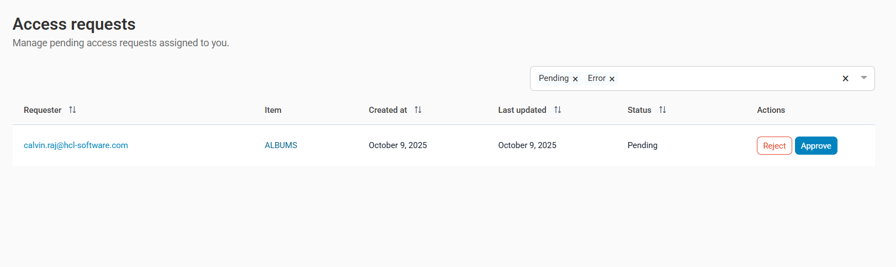
Audit Access Requests
Audit Access Request Configuration Changes
The configuration changes regarding data access requests are traced in the audit log. You can list audit events using the Audit API.
Audit Access Request Changes
The data access requests and their processing are recorded in the audit log. You can list audit events using the Audit API.
For more information about Audit API, see Audit Trail API.